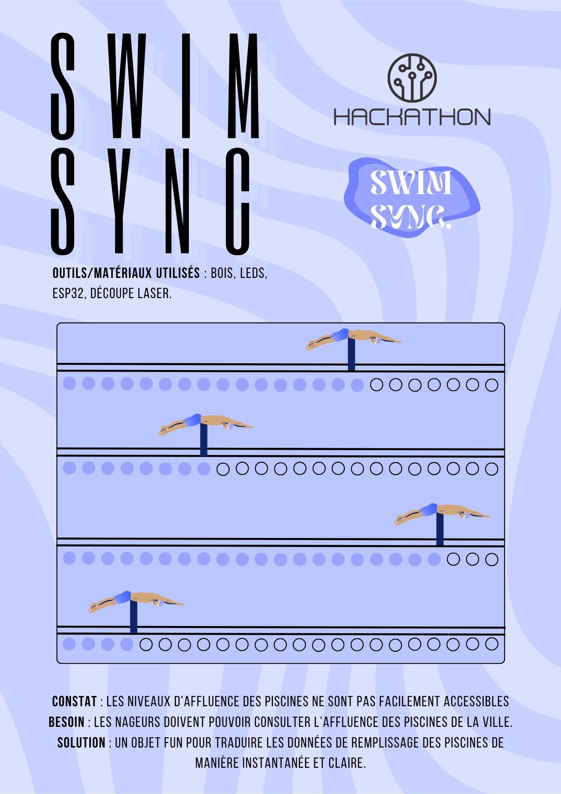
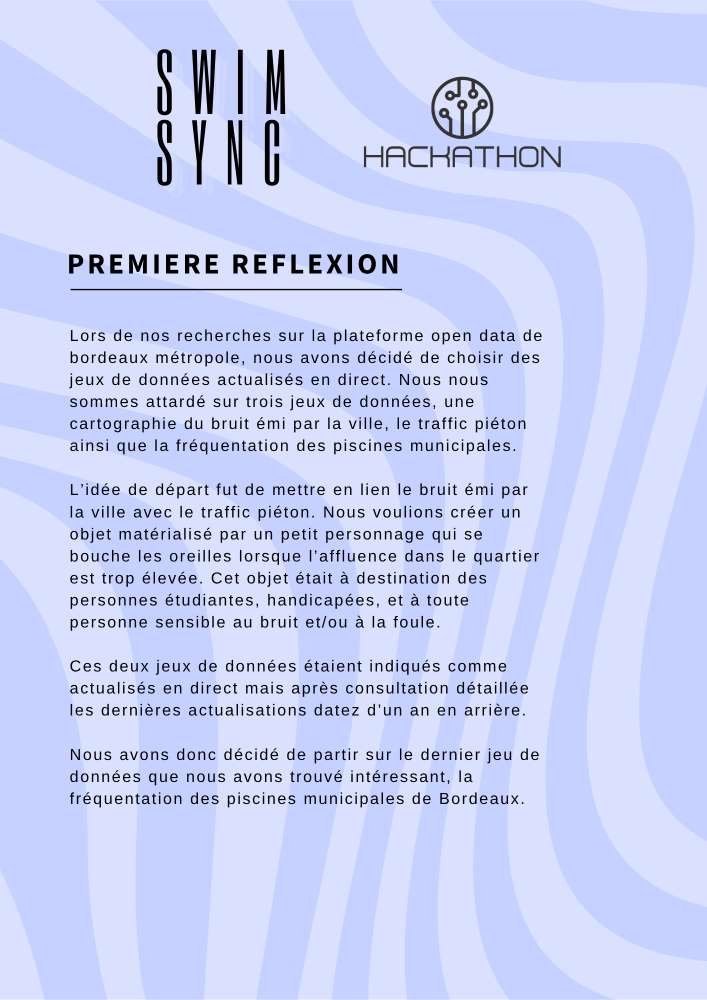
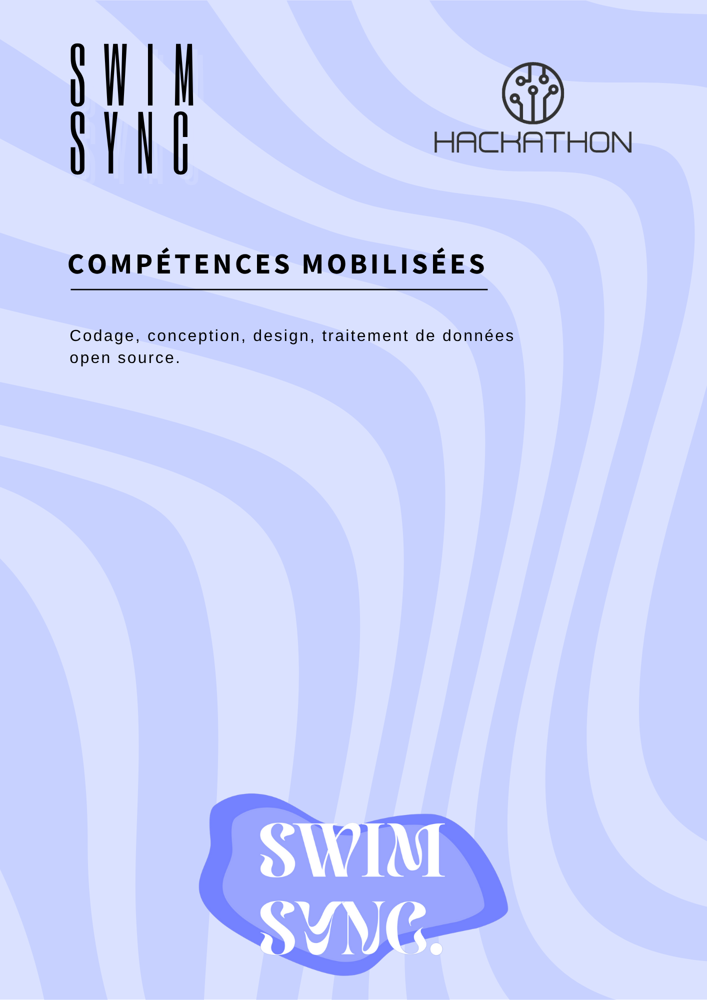

The interactive pool "SWIM SYNC"
During the POCL 2025 Hackathon in Bordeaux, organized by the association Les Petits Débrouillards, we designed a Playful Connected Object (POCL) based on open data analysis. This event brought together students in engineering and design around a common goal: to make territorial data visible and tangible.
Skills developed :
- Open data analysis : Selection and use of relevant datasets showing real-time attendance levels at public swimming pools in Bordeaux.
- POCL design : Development of a mechanical miniature Olympic swimming pool where each swimmer represents a real pool. The swimmer’s position reflects how crowded that facility is.
- Interactive modeling : Integration of light indicators and an automated update system refreshing every ten minutes to display live data.
- Targeting a specific audience : The object was designed for regular swimmers, with the goal of raising awareness about data use and improving distribution across public sports facilities. Creation of a logo and a presentation of the object.
This project was a stimulating experience, combining design, technology, and social reflection. It allowed us to explore the potential of physical data visualization in addressing local community challenges.
View or download the complete PDF by clicking on it.


